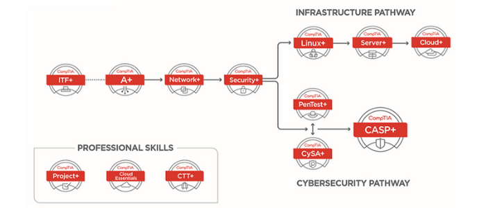

Here are some of my current goals:
- Begin earning certificates from CompTIA, Cisco, and other relevant institutions. As seen in the About Me page, I have my Associate's degree in Information Technology and Programming. While that demonstrates some of my skills, I believe it does not fully represent my abilities. I want to earn certificates to showcase my networking knowledge and my ability to work with different systems. Additionally, I would like to learn more about and demonstrate my cybersecurity expertise. Earning certificates will help me validate my knowledge in these areas and help me become a better team member. Below is a basic roadmap of the certificates to follow.
- 
- Work on more personal projects to showcase my skills and abilities. If you haven't already, you can view my projects page here. I don't have enough solo projects to showcase my skills, so I want to work on more projects with different languages and show my flexibility. Also, when working on projects, you always learn new things which is always a plus.
- Continue to improve and stay updated with the latest technologies. With the two goals before this one, it will help me stay updated with the latest technologies. Technology is always changing and advancing, so it is important to stay updated. This will help enhance my skills and contribute value to a team, ensuring my relevance in the IT field. Additionally, I genuinely enjoy learning about new developments as they emerge, such as the rise of AI.
- Build a successful career by supporting and collaborating with different IT teams.